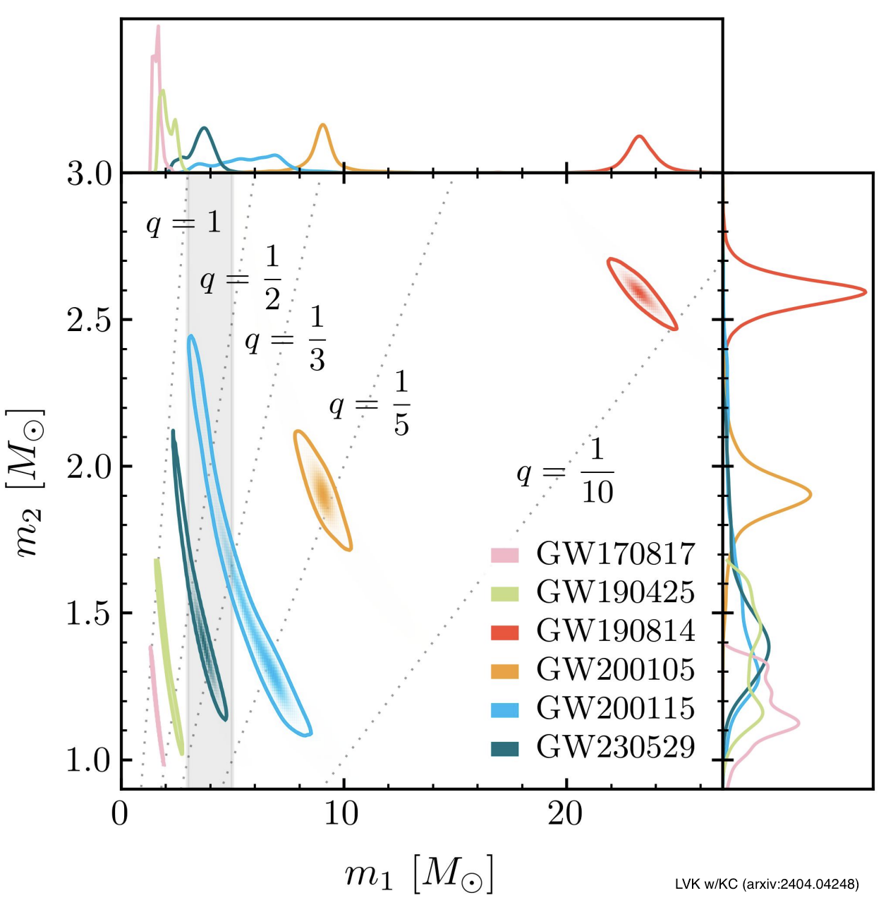
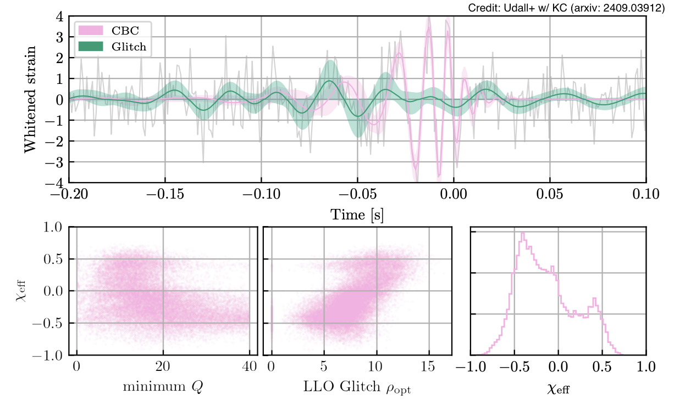

LIGO and ground-based detectors
 The LIGO detectors, along with Virgo and KAGRA, have detected dozens of colliding neutron stars and black holes. We analyze the data to learn about the properties of these cosmic objects - things like their masses, how fast they spin, how far away from Earth they come from, etc. These detections help us understand both the fundamental nature of these extreme objects and how they form and evolve in the universe. From studying hundreds of these collisions, we have found some remarkable events. GW190814 involved either the heaviest neutron star or the lightest black hole ever seen. GW230529 contained an object in the mysterious "mass gap" - the range between the heaviest possible neutron stars and lightest black holes. GW231123 was the most massive pair of objects we have observed colliding. And GW250114 gave us the strongest, clearest signal yet, providing an excellent view of how black holes merge and letting us test our understanding of black hole physics.The spins of black holes
When two black holes spiral toward each other, their spins (rotation) create additional gravitational effects beyond just their masses. This spin interaction changes the gravitational-wave signal we detect, allowing us to measure not only the objects' masses but also how fast they were spinning.

The duration of a gravitational-wave signal depends on how the black holes are spinning relative to their orbit. When a black hole spins in the same direction as the orbital motion (like a spinning top rotating the same way it is circling around), the system has more total energy that must be radiated away as gravitational waves before the black holes can merge. This makes the inspiral process take longer, creating a longer detectable signal. When a black hole spins opposite to the orbital motion, there is less total energy to radiate away, so the merger happens faster and produces a shorter signal.

When black holes spin sideways relative to their orbit (like tilted spinning tops), this creates a wobbling effect called precession - both the spins and the orbital motion start rotating in space like a wobbling gyroscope. Since gravitational waves are mainly beamed out along the orbital axis, this wobbling changes what we see from Earth. As the system precesses, sometimes we are looking more directly at the "beam" of waves and sometimes more to the side, causing the signal strength to vary up and down over time.

When black holes have complex spins - both aligned with the orbit and tilted sideways - this affects both how long the signal lasts and creates those wobbling patterns in the waves. It is much easier to measure the signal's duration than to detect the subtle wobbling effects. This means we can determine aligned spins more precisely, but measuring tilted spins is much harder and less certain. However, for a few gravitational-wave detections, we have managed to measure both types of spin. These measurements reveal clues about where and how these black hole pairs originally formed - whether in dense star clusters, from binary stars, or in other cosmic environments.

The wobbling effects from tilted spins can be detected during the final merger phase of heavy black hole collisions, where the mathematical models are incomplete and we rely more on numerical simulations. Caltech graduate student Simona Miller led research analyzing different time segments of gravitational-wave signals to understand how spins leave their mark throughout the event. Our study of GW190521 - the most massive black hole merger detected so far - revealed that our ability to measure the wobbling precession comes primarily from the very last orbit before the black holes merge. This helps us understand which part of the gravitational-wave signal contains the most useful information about complex spin orientations.

Beyond studying individual collisions, we also analyze the entire collection of gravitational-wave detections to understand the broader population of black holes in the universe. Researcher Tom Callister and Miller led a study that tackled two key questions: Are most black holes completely non-spinning, and do we see pairs where the spins oppose the orbital motion? We found that most black holes do spin, even if slowly, and that some binaries do have spins pointing opposite to their orbit. These findings help us understand how black holes form - whether they come from the collapse of individual stars or from chaotic interactions in crowded stellar environments like globular clusters.
Instrumental glitches and astrophysical inference

The LIGO detectors do not just pick up real gravitational waves - they also detect "glitches," which are bursts of noise from the instruments themselves. These glitches come in many different shapes and can look like real signals or overlap with actual gravitational waves, making it hard to measure the true properties of the source. This first happened for GW170817, the first detected neutron star collision, that overlapped with a glitch about 30 times stronger than the actual gravitational wave signal. To solve this, we develop methods to separate glitches from signals. We employ models that account for everything in the data at once: the gravitational wave, the background noise, and the glitch. This technique effectively "accounts for" the glitch and gets accurate measurements of the real astrophysical event. For example, former Caltech graduate students Ethan Payne, Jacob Golomb, and Sophie Hourihane led a study on how the glitch that overlapped with GW200129 affects measurements of spin-precession - the wobbling motion of spinning black holes as they orbit each other.
GW191109 is a another interesting case where a glitch affects our scientific conclusions. This gravitational-wave signal showed something rare: the spin of one object was pointing in the opposite direction to the orbital motion. This "negative spin" is important because it suggests the black holes formed in a crowded stellar environment under gravitational interactions, rather than from two stars that evolved together. However, this signal also overlapped with a glitch, which created a problem. Former Caltech graduate students Rhiannon Udall, Sophie Hourihane, and Caltech graduate student Simona Miller joined forces to lead a comprehensive study of GW191109. When we tried different ways of accounting for the glitch in our analysis, we got different answers about whether the spin was actually negative or not. This means we cannot be confident about this important astrophysical conclusion. This example shows why glitches are such a challenge for gravitational-wave astronomy. Measuring spins accurately is crucial for understanding how and where these black hole pairs formed, but glitches can easily contaminate these delicate measurements. We are actively working on better methods to separate glitches from signals so we can gain confidence in our spin measurements.